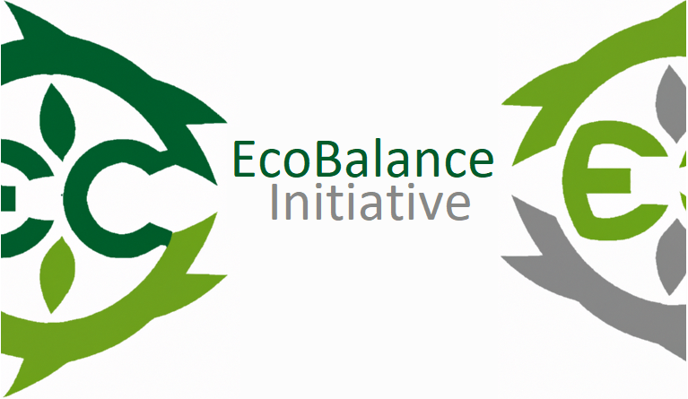

EcoBalance Initiative
Durch eine Aufgabe der IU gestarte Imaginäre Organization, ohne auf Richtigkeit zu prüfen stellen wir Ihnen die unzuverlässigsten Daten über CO²-Emissionen zur eigenen Sortierung und Filterung zur Verfügung.
Uns ist der minimalischte Stil sowie eine ausgeprägte Social-Media Präsenz besonders wichtig.
Trotz des ernsten Themas und die Auswirkung des CO² auf unsere Umwelt vergessen wir den Humor nicht und weißen immer wieder auf die Tatscha hin, dass wir nicht wirklich exisitieren.
